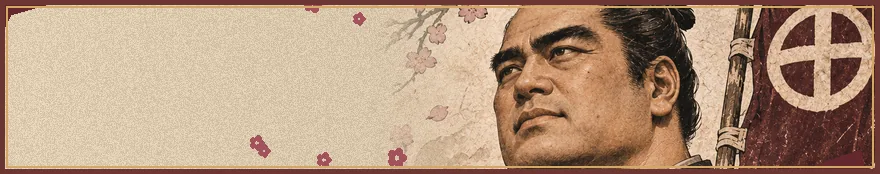
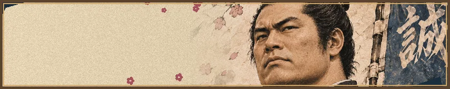

幕末動乱・盤上決戦
⚔ AI対戦
⚔ 二人対戦
AIの強さ
初級
中級（標準）
上級
対局ルール
新選組将棋（全要素ON・推奨）
カスタム対局
通常将棋
特殊ルール設定
事件札
地震と穴
脱走
粛清
寝返り
人斬り
通常対局
いざ、出陣
完成済みの9×9対局・事件札・AI対戦
幕末物語
ストーリーモード
池田屋から鳥羽・伏見まで、全4章
🔊 タイトルコールを聴く
人物コレクション
›
新選組の歴史
›
新選組将棋の遊び方
›
将棋の基本ルール
›
事件札が戦局を変える

西郷隆盛
薩摩・維新指導者 ／ 玉
薩長同盟、出陣を待つ
敵軍の持ち駒

近藤勇
局長 ／ 玉
新選組、出陣を待つ
あなたの持ち駒
最初から
降参
タイトルへ戻る
将棋の基本ルール
🛠 開発テスト・対局管理
演出を個別に確認できます。事件札のテストでは盤面が変化する場合があります。
🎴 カード演出テスト
🌋 地震演出テスト
🏇 寝返り・援軍
🏃 脱走
⚔ 粛清
🏳 手番画像
🏆 自軍勝利演出テスト
💀 敵軍勝利演出テスト
♪ 効果音テスト
効果音：ON
⚔ 掛け声：ON
新選組の声
薩長の声
♪ BGM：ON
音量
音声：未確認
BGM：ON（出陣時に再生）
勝負あり！
もう一局！
タイトルへ戻る
成るか、成らぬか
駒を成り駒に変化させますか？
成る！
成らぬ
事件札
局中に何が起こるか…
もう一度タップして閉じる
カードをタップしてめくる
事件札は双方4手番ごとに出現・タップでめくる・手番消費なし。札は有利/不利/何もなし。盤面をタップして指します。
📱 縦画面に戻してください
新選組将棋は縦画面専用です